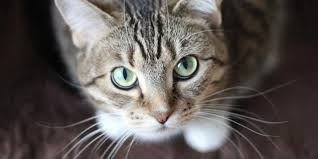
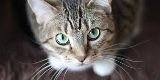

These are images of cats
 



This is information about cats
Domestic cats, no matter their breed, are all members of one species.
Relationship with Humans
Felis catus has had a very long relationship with humans. Ancient Egyptians may have first domesticated cats as early as 4,000 years ago. Plentiful rodents probably drew wild felines to human communities. The cats' skill in killing them may have first earned the affectionate attention of humans. Early Egyptians worshipped a cat goddess and even mummified their beloved pets for their journey to the next world—accompanied by mummified mice! Cultures around the world later adopted cats as their own companions.
Hunting Abilities
Like their wild relatives, domestic cats are natural hunters able to stalk prey and pounce with sharp claws and teeth. They are particularly effective at night, when their light-reflecting eyes allow them to see better than much of their prey. Cats also enjoy acute hearing. All cats are nimble and agile, and their long tails aid their outstanding balance.
Communication
Cats communicate by marking trees, fence posts, or furniture with their claws or their waste. These scent posts are meant to inform others of a cat's home range. House cats employ a vocal repertoire that extends from a purr to a screech.
Diet
Domestic cats remain largely carnivorous, and have evolved a simple gut appropriate for raw meat. They also retain the rough tongue that can help them clean every last morsel from an animal bone (and groom themselves). Their diets vary with the whims of humans, however, and can be supplemented by the cat's own hunting successes.